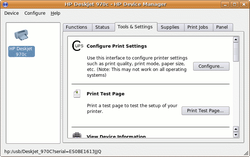

HPLIP
Dieser Artikel wurde für die folgenden Ubuntu-Versionen getestet:
Ubuntu 16.04 Xenial Xerus
Ubuntu 14.04 Trusty Tahr
Zum Verständnis dieses Artikels sind folgende Seiten hilfreich:
Hewlett Packard Linux Imaging and Printing  (HPLIP) ist ein freies und quelloffenes Softwarepaket aus Treibern und Programmen für Drucker und Multifunktionsgeräte der Firma HP. Das HPLIP-Projekt unterstützt mehr als 2264 Druckermodelle, einschließlich Deskjet, Officejet, Photosmart, PSC (Print Scan Copy), Business Inkjet, LaserJet, Edgeline MFP und LaserJet MFP - die vollständige Liste .
(HPLIP) ist ein freies und quelloffenes Softwarepaket aus Treibern und Programmen für Drucker und Multifunktionsgeräte der Firma HP. Das HPLIP-Projekt unterstützt mehr als 2264 Druckermodelle, einschließlich Deskjet, Officejet, Photosmart, PSC (Print Scan Copy), Business Inkjet, LaserJet, Edgeline MFP und LaserJet MFP - die vollständige Liste .
Installation¶
In Ubuntu ist HPLIP in der Standardinstallation enthalten. Falls nicht vorhanden, muss folgendes Paket installiert [1] werden:
hplip
 mit apturl
mit apturl
Paketliste zum Kopieren:
sudo apt-get install hplip
sudo aptitude install hplip
Möchte man den Drucker über eine grafische Oberfläche installieren und verwalten, so muss noch zusätzlich folgendes Paket installiert werden:
hplip-gui (universe)
mit apturl
Paketliste zum Kopieren:
sudo apt-get install hplip-gui
sudo aptitude install hplip-gui
Von der HPLIP Seite¶
Hinweis:
Da eine manuelle Installation Konflikte mit der Paketverwaltung auslösen kann, sollte das/die Ubuntu-Paket/e zuerst deinstalliert werden!
Sollten die offiziellen Ubuntu-Pakete nicht aktuell genug sein bzw. mit dem eigenen Drucker nicht funktionieren, so kann man von der Downloadseite die derzeit aktuelle Version (3.x.x) auch direkt herunterladen. Eine vollständige Liste aller unterstützter Drucker einschließlich der Treiberversion kann auf hplipopensource.com abgerufen werden.
Es gibt zwei Varianten:
Automatisch¶
Es gibt ein selbst extrahierendes Archiv hplip-<version>.run mit voll automatisiertem Installationsskript. Die Installation ist sehr anschaulich mit Screenshots erklärt, allerdings auf Englisch: Installer Walkthrough . Um das Skript zu starten, wechselt man mit einem Terminal [2] an den Ort, wo sich das Skript befindet und gibt dort ein:
sh hplip-<version>.run
Sollten hierbei Fehler auftauchen, liegt das meist an fehlenden Voraussetzungen bzw. Paketen.
Manuell¶
Sollte die obige automatische Installation nicht fehlerfrei laufen, so kann man jederzeit auf die traditionelle Methode mit hplip-<version>.tar.gz zurückgreifen. Wie dies funktioniert, wird in den Anleitungen Installation HP Linux Imaging and Printing  (12/2014) und Manual Build and Install Instructions for Ubuntu ausführlich beschrieben [3][4].
(12/2014) und Manual Build and Install Instructions for Ubuntu ausführlich beschrieben [3][4].
Konfiguration¶
 Zum Einrichten des Gerätes verwendet man am besten den mitgelieferten grafischen Assistenten (das Paket hplip-gui muss hierfür installiert sein - siehe oben). Das Konfigurationsprogramm benötigt keine Adminrechte. Führt man das Installationsprogramm mit Adminrechten aus, so startet die HPLIP-Toolbox nach der Installation nicht, aufgrund eines Berechtigungfehlers des ".hplip" Ordners in /home.
hp-setup
Wer das Setup in einem Terminalfenster starten möchte (weil keinen X-Server verfügbar ist), hängt den Parameter -i (interaktiv) an.
hp-setup -i
Hier wählt man nur die entsprechende Schnittstelle (USB, Parallelport/LPT oder Netzwerk "JetDirect") aus - das Gerät wird in der Regel automatisch erkannt.
Benutzung¶
Das grafische Programm zum Ausführen diverser Wartungsoptionen und Zusatzfunktionen (bei Multifunktionsgeräten) heißt hp-toolbox und lässt sich direkt in einem Terminal-Fenster starten [2], unter GNOME auch über das Startmenü unter "System -> Einstellungen" bzw. unter KDE über "System -> HPLIP Toolbox".
Wartung¶
Die einzelnen Funktionen der grafischen Toolbox lassen sich auch separat aus dem Terminal aufrufen:
| Befehl | Beschreibung |
hp-align | Tintenpatronen ausrichten |
hp-clean | Tintenpatronen reinigen |
hp-colorcal | Kalibrierung der Farbpatronen (nicht alle Modelle) |
hp-firmware | aktualisierte Firmware (Gerätesoftware) hochladen |
hp-info | zeigt Informationen zu Status und Modell des Gerätes |
hp-levels | zeigt Füllstände der Tintenpatronen an |
hp-print | ein einfacher Druckerdialog (unabhängig von der Desktopumgebung) |
hp-testpage | druckt eine Testseite inklusive Geräteinformationen |
hp-timedate | Zeit / Datum eines OfficeJets festlegen |
hp-unload | Zugriff auf Speicherkarten |
Faxen¶
Einige Multifunktionsgeräte haben eine zusätzliche Faxfunktion, die man auch ohne Umweg (via Papierausdruck) direkt nutzen kann. Damit kann man entweder Bürodateien direkt in das Programm hineinladen oder über den virtuellen Drucker an das Programm weiterleiten. Daraufhin füttert man das Adressbuch mit Nummern, aktiviert die Empfänger und drückt auf die nun aktivierte Schaltfläche "Send Fax".
Hinweis:
Aufgrund von technischen Einschränkungen muss vor dem Faxen das Hilfsprogramm hp-sendfax gestartet [5] sein.
Scannen¶
Das Scannen läuft über die standardisierte SANE-Schnittstelle - siehe Scanner. Der Automatische Dokumenteneinzug wird auch unterstützt - unter XSane muss man dafür ein Häkchen bei "batch scan mode" setzen.
Für manche Drucker ist zum Scannen ein Plugin nötig. Die Installation über die "HPLIP Toolbox" funktioniert nicht. Es muss daher auf der Kommandozeile durchgeführt werden:
sudo hp-plugin-ubuntu
Kopieren¶
hp-makecopies [5] erlaubt, die Kopiereinstellung (Kontrast, Skalierung, Qualität, Anzahl) vom PC aus zu steuern.
Speicherkarten¶
Mit dem Programm hp-unload [5] kann auf Speicherkarten zugegriffen und der Inhalt in ein Verzeichnis der eigenen Wahl kopiert werden.
Deinstallation¶
Bei manueller Installation wechselt man in das Verzeichnis der entpackten Archivdatei (.tar.gz) und führt folgende Befehle im Terminal [2] aus:
sudo make uninstall sudo rm -rf /usr/share/hplip
Problembehebung¶
Die Mitarbeiter des offiziellen Hewlett-Packard-Kundendienstes sind primär auf Problembehebungen mit Windows geschult. Unterstützung für die Linux-Treiber und Hilfsprogramme erhält man informell auf der Launchpad-Projektseite .
 Übersicht zum Thema
Übersicht zum Thema- Erstellt mit Inyoka
-
 2004 – 2017 ubuntuusers.de • Einige Rechte vorbehalten
2004 – 2017 ubuntuusers.de • Einige Rechte vorbehalten
Lizenz • Kontakt • Datenschutz • Impressum • Serverstatus -
Serverhousing gespendet von